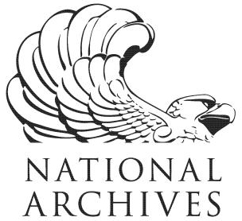
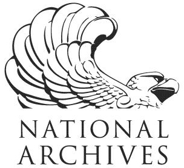

Tim Menzies: se 4 ai 4 good
It's an AI world.
But is that software being used, as it should?
Is it optimized? Unbiased? Explainable?
Maybe someone should look into that...
I seek talented graduate students to find and fix (as much as we can) the short-comings in real-world AI/ML. Is that you?
Tim Menzies (IEEE Fellow, Ph.D., UNSW, 1995) is a full Professor in CS at North Carolina State where he explores how SE can improve optimization, ethics, and explainable AI. He is the director of the RAISE lab (real world AI for SE) and the author of over 280 publications (refereed) with 20,000+ citations and an h-index of 69. He has graduated 18 Ph.D. students, and has been a lead researcher on projects for NSF, NIJ, DoD, NASA, USDA (total funding of $13+ million) as well as joint research work with private companies. Prof. Menzies is the editor-in-chief of the Automated Software Engineering journal and associate editor of TSE (IEEE Transactions on Software Engineering) and other leading SE journals. For more, see his web site https://timm.fyi.
News
- May'23: Invited to FSE'24 to program committee
- May'23: ICSE'23 talk Future of SE
- Apr'23: IEEE TSE acceepts What Not to Test (for Cyber-Physical Systems)
- Apr'23: Andre Motta passes his oral prelim
- Mar'23: New gift from DivePlan: studies on surrogate data ($50K)
- Mar'23: ICSE'23 accepts our ROSE'23 proposal (open science in SE).
- Mar'23: Invited to PC of ICSE'24 NIER track
- Feb'23: Invited to the review board for 2024 IEEE Fellow applications.
- Feb'23: Invited to ESEM'23 program committee.
Old News
Papers:
- Feb'23: For ICSE'23 journal first. Reports on vulnerabilities; Fair-Mask; labeling cost
- Feb'23: To appear, Expert Systems with Applications: Redesigning Cloud Applications
- Feb'23: To appear, IEEE Software: Avoiding Malicious Explanations
- Jan'23: To appear, IEEE Software: Engineering Ethical Mindset
- Jan'23: Accepted to TOSEM: Fair Enough: Searching for Sufficient Measures of Fairness
- Jan'23: Accepted to EMSE: Enhancing the Interpretability of Model-based Optimizations
- Jan'23: Accepted to TOSEM: Assessing Early Bird Heuristic
- Dec'22: Accepted to IEEE TSE: How to Find Actionable Static Analysis Warnings
- Dec'22: 2022 papers = TSE*8 + EMSE*6 + TOSEM*2 + MSR*3 + other*3
- Oct'22: new TSE journal paper: FairMask:v.fast multi-attribute fairness
- June'22: journal paper: EMSE, Predicting next year's project health, for 1200 projects.
- ...
- Dec'22: invited as a "Future of SE" speaker, for ICSE'23
- Dec'22: invited talk, RIT: Refactoring AI for SE
- Nov'22: briefing, MSR'23: Reviewer 2: Go F’yourself (not)
- Nov'22: keynote, SSBSE'21: Future of (S)SBSE
- Nov'22: keynote, ISSRE: How to refactor AI (for SE)
- Oct'22: keynote, ISSRE: Advice to new faculty
- Oct'22: keynote, ASE 2022: Advice to Ph.D. students [slides]
- May'22: 12 ICSE talks done, just 7 left to go. Oy vey.
- Mar 1,'22: invited as keynote speaker for ISSRE'22.
- ...
- Oct'22 : new Grant, Learning Analytical Sciences: $170K. SSL for DL
- Oct'22 : ICSE accepts our workshop proposal for FAIRWARE'23
- Sept'22: gift from Meta: $50K. Much appreciated.
- Oct'22 : new Grant, Learning Analytical Sciences: $170K. SSL for DL
- ...
- Dec'22: Journal of Systems and Softwares accept special issue proposal for FAIRWARE'23 papers
- Dec'22: invited to IJCAI'23 program committee;
- Nov'22: invited, PC member, EASE'23
- Oct'22: invited, PC member, CAIN'23
- May 9,'22: Fairware'22 (equitable SE technology) a great success.
- Feb 1,'22: invited, PC member, ICSE'23.
- Mar 20,'22: invited to be Associate Editor, IEEE TSE.
- ...
- Jan'23: Video for CACM article Reuse is Rampant
- Dec'22: my latest grad, the talented Dr Tianpei (Patrick) Xia (with proud parents)
- Dec'22: departmental newsletter on my SE subject: Making the Pitch!
- Dec'22: 2022 funding = $220K (new) + $2.5M (on-going);
- Dec'22: 2022 Ph.D.s = 1 (new) + 5 (completed) + 5 (on-going);
- May 6,'22: just graduated 5 Ph.D. students (a new departmental record).
- May'22: my Ph.d. students start summer work at Amazon, Indeed, Facebook.
- ...


 


{kind=link}